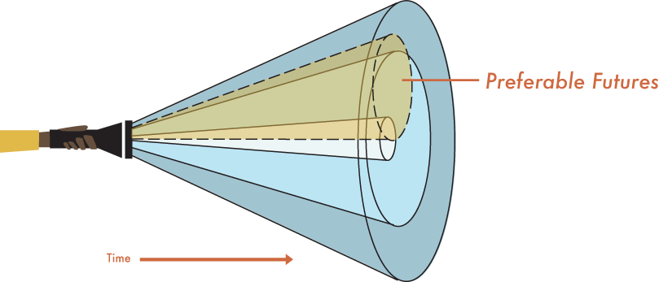

What is Design Fiction?
All designers “grapple with the unknowability of the future.” (Reeves, 2016.) A designer gets charged with the task of improving something. That improved something doesn’t exist yet, and the designer can only guess about what kind of future their work will find itself in. Design fiction is an emerging, slippery, open-ended kind of design practice. Some people contextualize design fiction as a research method; for them, it is storytelling about the near future that works as a type of anticipatory ethnography. (Lindley, 2014.) Others take a more critical, speculative approach. To them, design can “speculate about future possibilities” or be a “catalyst for change.” Rather than accepting the momentum of technological change as a given, where it might seem like a designer’s job is to implement the status quo, critical approaches let designers ask questions or participate in conversations about what kind of future is being created. (Dunne, 2013.)
What is Design Fiction?
Johan Huzinga, Homo Ludens: A Study of the Play-Element in Culture
We have been inspired by both the storytelling and critical aspects of design fiction to create activities and materials for two different workshops to try to bring aspects of design into libraries. For each, we created games that allowed participants to play games to explore new ideas. Like Huizinga’s magic circle, we tried to create a space that would allow them “to behave differently” (Ham, 2016). It also allowed us to experiment with the type of material we presented. Rather than telling participants, “this works”, the critical, experimental aspects of approaches like design fiction inspired us to ask, “could this work”, or “what parts of this might work?”
“Fiction is evolutionarily valuable because it allows low-cost experimentation compared to trying things for real.”
It freed us up to experiment. The following Tweet from Dennis Dutton sums up our approach well: “fiction is evolutionarily valuable because it allows low-cost experimentation compared to trying things for real.” Now we’ll summarize the two workshops, starting with one where we played a game designed to help librarians be more persuasive.
What Led Us to Design Fiction
"Bringing it Home: Tools to Bridge the Gap Between Inspiration and Real Action,"
I2C2: Innovation, Inspiration and Creativity Conference. Manchester, UK, March 6-7, 2014
The Library Persuasion Game
What Led Us to Design Fiction
Scene from "Bringing it Home: Tools to Bridge the Gap Between Inspiration and Real Action."
The persuasive librarian might hold up the “Authority” card and say something like “So, my old college friend, Paul Bunyonsen, is a pretty well-respected wood carver. He’s putting a show together at that fancy new gallery up in Sheyboygan. We started talking, and it seems like his work could be a good fit for our library.” Holding up the “Commitment and Consistency” card, the persuasive librarian continues. “Anyway, the new strategic plan is for us to put together innovative programs that appeal to the people in our rustic, wooded community. And so I thought, what better way to do that than with chainsaws?”The fictional world that we set up, with a librarian, a boss, a bunch of pre-made ideas, and Dr. Cialdini’s model of persuasion, gave participants the chance to practice a new skill. But we also observed that people were looking at the material critically—many people wanted to bring a deck of cards home so they could play with their bosses and coworkers. They didn’t want to use the material to exert influence over them; they wanted to use the material to spark conversations with them.
What Led Us to Design Fiction
"Brainstorming and Prototyping Workshop,"Library UX Chicago, Chicago, IL. August 19, 2016.
"From User Testing to Prototypes: Making Observations Tangible,"Designing for Digital, Austin, TX. April 6, 2016.
Earlier this year, we developed a brainstorming workshop for librarians. We presented this work in two different places- first at the Designing For Digital 2016 conference, and next at the Chicago Library UX Meetup Group. We observed that it was really common in meetings to hear someone say, “Lets brainstorm.” However, the resulting brainstorming sessions tended to produce a small number of ideas, and not a large number. Because brainstorming sessions tend to generate a small percentage of high quality ideas, it’s important that participants are able to generate lots of ideas. In order to give librarians a chance to practice brainstorming, we created a fictional grocery store we called Flipman Foods. During the course of a four-hour workshop participants receive a series of letters from Walt Flipman, the CEO of Flipman Foods, which challenge them to brainstorm ideas using different techniques. On one hand, the letters are ways to introduce participants to different methods that can help them generate ideas. We introduce them to using background research as a way to inform the brainstorming process, and we show them how to develop short skits to communicate clearly about the ideas they come up with.
What Led Us to Design Fiction
Sample letter from "Brainstorming and Prototyping Workshop."
At the same time, the character of Walt Flipman is one element of the workshop lets us guide the kind of ideas that participants will generate. Participants get to know who Walt is, and they try to make ideas that Walt would like. Flipman Foods is a high-end grocery story. At the beginning of the workshop, when we asked participants about the last time they walked out of the grocery story with something they didn’t expect to buy, they gave us lots of examples of techniques they used to be sure they ONLY bought what they needed when they went shopping. But by the end of the workshop, they were coming up with ideas that would help Flipman Foods “encourage healthy eating and be environmentally responsible”, while still remaining “wildly profitable.” By playing at brainstorming for a grocery store, participants get the chance to practice some new skills. In this case the short skits that participants developed were a way to quickly experiment with possible futures. Here the fictional world lets them borrow ideas from another industry. Then, when the game ends, we can ask them to be critical again. We can ask, “Is there anything here that we could incorporate into the world of libraries
Speculative Design
Adapted from Henchey, N. (1978) Making Sense of Futures Studies. ‘Alternatives.’ 7 p24–29.
These workshops all dealt with the act of play, but within the circle of probably and plausible futures. "Probably" being things "likely to happen" and "plausible" being things that could happen. As you get further into the future, things become more open and flexible. So what if we expanded it to include the possible and pushed more into the future? The what-ifs, like warp speed on Star Trek or time travel on Doctor Who. This imagining is sometimes called speculative design, which is another word for design fiction.
“We believe that by speculating more, at all levels of society, and exploring alternative scenarios, reality will become more malleable and, although the future cannot be predicted, we can help set in place today factors that will increase the probability of more desirable futures happening.”- Dunne and RabySpeculative Everything: Design, Fiction, and Social Dreaming
But why speculate? Like play, it opens up our realms of possibilities and helps us explore in an undefined space. We are free to come up we solutions or even further problems, that we would have never considered if we kept our thoughts in the here and now. Dunne and Raby speak to these flexibility in their book Speculative Everything. They say: ...
Speculative Design
Adapted from Henchey, N. (1978) Making Sense of Futures Studies. ‘Alternatives.’ 7 p24–29.
So who defines what is desireable? As humans, we want to create the best scenerio for ourselves. This brings in the aspect of preferrable futures, which is what we "want to" happen. This type of future is more emotional than cognitive, stemming from value judgements. Because values differ between people, this class of futures can vary. With this, we step into the concept of utopian and dystopian futures. Both are important to traverse, but when exploring possible futures, we need to try to stay cognitive and not let our emotions dictate possible outcomes.
Dystopian & Utopian
In general, people try to shy away from possible negative futures, because one always wants to depict a future as they prefer to see themselves in. But the thing is, there are very good reasons to consider the dystopian aspect when working with design fiction. While a positive future shows the strengths of your solutions, a negative outcome will help you foresee the flaws. And contemporary designs have borrowed from past artists to create the Design Fiction project of today and tomorrow.
Design Fiction
Bruce Sterling has been credited with inventing the term “design fiction” in this 2005 book. The book is mainly about the changing landscape of design, and how designed things have increasingly digital components. He makes the point that these changes will probably fall somewhere along a spectrum between utopian and dystopian. The book presents a context for thinking about why design fiction is useful. In a world where technological changes seem to be increasingly rapid and disruptive, it makes sense to think critically about technology and to work to find new ways to explore and think about near future possibilities. His blog, Beyond the Beyond, includes links to interesting design fiction projects, upcoming exhibitions, and more. Design Fiction: A short essay on design, science, fact and fiction Julian Bleecker begins this essay by noting how many fields seem to have design attached to them. There is service design, experience design, research design or even finance design. On one hand, this has the potential to “blanch” the word design of it’s meaning over time. But on the other hand, it also tries to indicate, “we haven’t entirely worked through what it means to do finance and design simultaneously. We’ll work it out, but we know this—we’re trying to do something different, and clever, and creative and thoughtful.” (Bleecker 2009.)
Design Fiction in Art
Practice
"One is lost in a new world of a thousand possibilities...which will carry one forward into a completely unknown territory"
Pierced Forms (1959)Design Fiction has been used by artists for years from the small task of sketching to the final work of a performance piece. Yet, we are just beginning to catch on to what artists have been doing for decades. For example, the sculpter Barbara Hepworth used sketching and drawing as an exploratory medium; an art she felt was an "exciting adventure." She saw drawing as freeing since it didn't have the same rules as the solid materials she carved from. Hepworth would have no goal in mind but to put down lines, one after another. She decribed the act of drawing as being "lost in a new world of a thousand possibilities because the next line in association with the first will have a compulsion about it which will carry one forward into a completely unknown territory." The thing is, a sketch artist would most likely have the same feeling of freedom when it came to sculpture because it is not their chosen medium. There are no rules set for them because it is OK to break them. This is what Design Fiction does for us. It allows us to work outside of our everyday medium, present reality, and gives us the freedom to embark on an "exciting adventure" of possibilities.
Design Fiction in Art
Exploring Solutions
Bureau for Direct Democracy (1972)Report on a Day's Proceedings at the Bureau for Direct Democracy , by Dirk Schwarze
There are a multitude of ways to explore the range of possibile futures with meaningful results. In 1972 the German artist Joseph Beuys turned education and discussion into art with his 'Bureau for Direct Democracy' performance piece. For 100 days Beuys held "office hours" and discussed political, artistic, and social issues with visitors. His goal was to come to a solution that would realize "true democracy." He didn't pre-define what "true democracy" was for the participants, but allowed them to explore what that meant to them. This allowed participants and Beuys to explore all possible solutions, both negative and positive. The openness of these performance-lectures were not bound by practiced or pre-determined events, but were intended to organically prompt further discussions by the audience during and after the performance. Beuys forced passive gallery vistors to take an active role in their possible futures.
Design Fiction in Art
Play & Structure
Happenings
Design Fiction Group at the MIT Media Lab
Still from: “Open Source Estrogen: Housewives Making Drugs” by Mary Tsan
This group produces a lot of interesting work. One of our favorites was “Open Source Estrogen” by Mary Tsang. This project asks the question, what are the ethical implications of people being able to synthesize and administer hormones at home?
Design Fiction Group at the MIT Media Lab
Still from: Pop Roach
Another project, Pop Roach, is about exploring the possibilities of using roaches as a “cute, colorful, tasty and highly nutritious” food source
Design Fiction on Social Media
VIDEO KENZO "The Realest Real" Fashion brand Kenzo teamed up with Carrie Brownstein (guitarist for the band Sleater-Kinney and star of the comedy series Portlandia) for this short film about Internet fandom. In an interview on Kenzo’s website, Brownstein said the movie is about “the idea that you can kind of insert yourself into the narrative of someone’s life, and into your idol’s life, through visuals, through songs, etc.it became about exploring ideas of fantasy and projection, but taking a more absurdist view of that, when fantasy comes slamming into reality.” (Brownstein, 2016.)Comments about the film on social media were especially interesting. “Relatable because I too want Natasha Lyonne to be my mom” and “I feel so called out by this...”
Design Fiction on Smart Objects
Uninvited Guests In a similar thread as Brownsein's video, Superflux Lab explored how our lives are shaped by a smart environment. The video they made shows how a smark fork, smart cane, and smart bed all fail when put against the habits of an elderly man who is set in his ways. This video is meant not to create solutions, but much like Beuys' project, to stimulate conversation. With that in mind, we are going to infuse some Beuysian and __ theory into this presentation and discuss the implecations this video exposes after we watch it. So let's take a look at how Superlux Labs explored the possible failures of a "one size fits all" solution to smart objects for the elderly.
Learning from Design Fiction
Uninvited Guests This video explores how smart items, which are created to make our lives better, can actually have the opposite effect. Superflux Lab shows how the notifications can disrupt healthy daily habits, like reading, that have been long engrained. How goal reminders, achievement reports, and sharing with friends and family can become frustrating. While depressing, this makes you think about how to create smart items and apps that will actually mesh with a person's lifestyle while altering their behaviors.
Design Fiction in Practice
How could apps encourage better behavior?
Is there an app you continue to use because it integrated into your life well?
How could the smart tools work together?
Conclusion: Why Libraries?
In “The Public Place of Central Libraries”, Gloria Leckie and Jeffrey Hopkins speculate about people in a knowledge-based economy. “People must continually educate themselves, upgrade their skills, and reorient themselves to new realities.” At the same time people are using libraries to remain relevant economically, they’re using libraries to “create culture.” Leckie and Hopkins describe a wide variety of creative projects they found people working on that “could not be characterized as merely recreational.” Patrons were using the library to inform things like theater set design, research for a film, or a photography exhibition. “Research suggests that the search for relevant information and its subsequent use in productive activity may be an integral characteristic of the construction of contemporary public culture in the emergent twenty-first century.” (Leckie, 2002) If this is true, then design fiction might have some potential for both practical and cultural purposes, because in each type of use, people are playing with new realities. We hope you’ll look at design fiction from a critical perspective. Could you use this? Could you use a part of this?
Thanks.
Sources
Bleecker, J. (2009). Design Fiction: A short essay on design, science, fact and fiction.Retrieved October 15, 2016, from http://drbfw5wfjlxon.cloudfront.net/writing/DesignFiction_WebEdition.pdf.
Brownstein, C. (2016, July 11). The Realest Real [Web log post]. Retrieved from https://www.kenzo.com/en/thereal.
Dunne, A., Raby, F. (2013). Speculative Everything: Design, Fiction and Social Dreaming. MIT Press.
Ham, D.A. (2016). How Designers Play: The Ludic Modalities of the Creative Process. Design Issues, 32(4), 16-28.
Huizinga, J. (1944). Homo Ludens. Switzerland: Routledge.
Leckie, G., and Hopkins, J. (2002.) The Public Place of Central Libraries: Findings From Toronto and Vancouver. Library Quarterly 72(3), 326-72.
Lindley, J., Sharma, D., Potts, R. Anticipatory Ethnography: Design Fiction as an Input to Design Ethnography. 2014 Ethnographic Praxis in Industry Conference Proceedings, pp. 237-253.
Reeves, S., Goulden, M., Dingwall, R. (2016). The Future as a Design Problem. Design Issues 32(3), 6-17.


 Still from: “Open Source Estrogen: Housewives Making Drugs” by Mary Tsan
Still from: “Open Source Estrogen: Housewives Making Drugs” by Mary Tsan